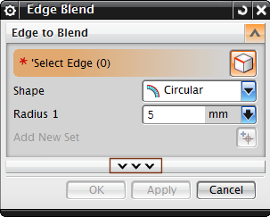

Less and More dialog box layouts
What is it?
NX displays Less and More layouts of command dialog boxes. The layout that you see depends on your role.
|
 |
|

Click the Less or More button on the dialog box to switch between the two layouts.
You can control whether NX displays the Less or More layout by default, using the Default Dialog Layout User Interface preference.
|
Tip |
To find the User Interface preference, choose Preferences→User Interface and click the General tab. |
You can create your own favorite layouts and access the layout you want from the Dialog Options menu when you right-click the dialog box title bar. Click Dialog Options on the dialog box title bar to see all the Favorites options.
NX does not display the Less or More button on the dialog box if:
-
You are in a favorite layout of the dialog box.
Click Dialog Options on the dialog box title bar to go to the Less or More layout.
-
The Default Dialog Layout User Interface preference is set to More.
-
NX needs to display a dialog box only in the More layout.
Why should I use it?
You have easy access to simplified or full layouts of command dialog boxes. NX matches the simplicity or complexity of the command dialog box to your NX role.